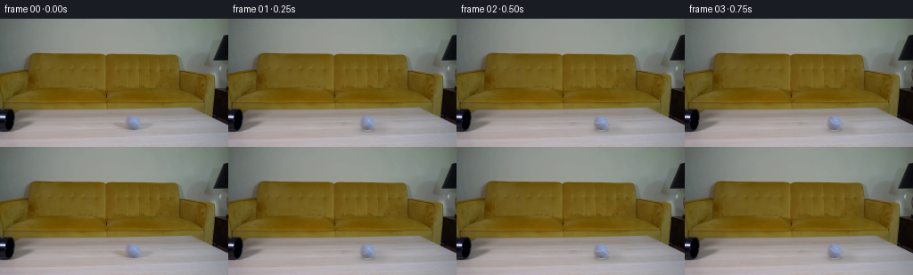
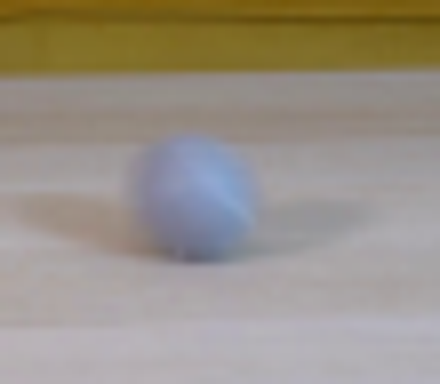
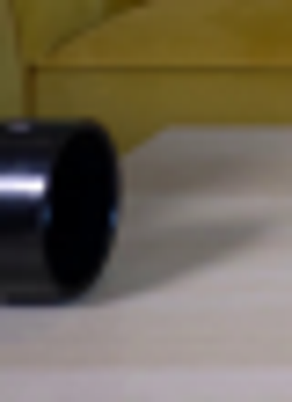
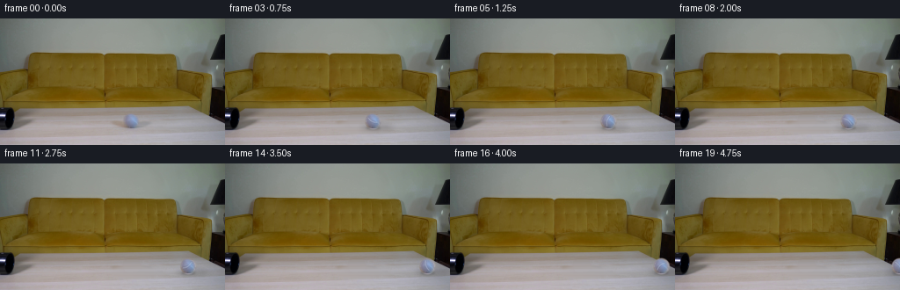

CODING AGENTS AS PIXEL WORLD MODELS
traex/GPT-5.6-Sol · 0023
点击播放 · 原生 RGB 像素
逐轮保存的候选
回放视频、检查图与代码变化。
每份候选均可单独播放。实际图片检查记录在下方工具轨迹中。
候选 01播放与检查图
点击播放 · 原生 RGB 像素


展开代码变化
--- 上一保存版本
+++ 本次保存版本
@@ -0,0 +1,141 @@
+from pathlib import Path
+import math
+import numpy as np
+from PIL import Image, ImageDraw, ImageFilter
+import artifact_io
+
+# A deterministic, image-based continuation of the supplied locked-off shot.
+CASE_DIR = Path(__file__).resolve().parent
+SOURCE = np.asarray(Image.open(CASE_DIR / "first_frame.png").convert("RGB"), dtype=np.uint8)
+H, W = SOURCE.shape[:2]
+
+
+def smoothstep(a):
+ a = np.clip(a, 0.0, 1.0)
+ return a * a * (3.0 - 2.0 * a)
+
+
+def clean_table(frame):
+ """Remove the original ball and its soft shadow while retaining horizontal wood grain."""
+ src = frame.astype(np.float32)
+ out = src.copy()
+ yy, xx = np.mgrid[0:H, 0:W]
+
+ # Per-scanline quadratic continuation. The table's grain is predominantly
+ # horizontal, so this retains the real bands and illumination much better
+ # than a flat paint patch.
+ xfit = np.r_[np.arange(92, 126), np.arange(177, 211)]
+ xpred = np.arange(112, 190)
+ predicted = np.empty((H, len(xpred), 3), np.float32)
+ for y in range(H):
+ for c in range(3):
+ coef = np.polyfit(xfit, src[y, xfit, c], 2)
+ predicted[y, :, c] = np.polyval(coef, xpred)
+ pred_full = src.copy()
+ pred_full[:, 112:190] = np.clip(predicted, 0, 255)
+
+ # Two overlapping feathered shapes cover both the sphere and the cast shadow.
+ ball_d = np.sqrt(((xx - 149.5) / 12.3) ** 2 + ((yy - 116.6) / 12.0) ** 2)
+ ball_mask = 1.0 - smoothstep((ball_d - 0.72) / 0.38)
+ shadow_d = np.sqrt(((xx - 151.0) / 35.0) ** 2 + ((yy - 123.1) / 10.0) ** 2)
+ shadow_mask = (1.0 - smoothstep((shadow_d - 0.57) / 0.43)) * 0.96
+ mask = np.maximum(ball_mask, shadow_mask)
+ mask[:, :112] = 0
+ mask[:, 190:] = 0
+ out = src * (1.0 - mask[..., None]) + pred_full * mask[..., None]
+ return np.clip(out + 0.5, 0, 255).astype(np.uint8)
+
+
+CLEAN = clean_table(SOURCE)
+
+# Extract the exact photographed ball. Its blurred edge is retained under a
+# feathered circular matte, preserving the source lighting and camera softness.
+BALL_CX, BALL_CY = 149.5, 116.5
+CROP_X0, CROP_Y0, CROP_SIZE = 137, 104, 26
+ball_rgb = SOURCE[CROP_Y0:CROP_Y0 + CROP_SIZE, CROP_X0:CROP_X0 + CROP_SIZE].copy()
+cy_local, cx_local = BALL_CY - CROP_Y0, BALL_CX - CROP_X0
+by, bx = np.mgrid[0:CROP_SIZE, 0:CROP_SIZE]
+d = np.sqrt((bx - cx_local) ** 2 + (by - cy_local) ** 2)
+ball_alpha = (255.0 * (1.0 - smoothstep((d - 8.2) / 2.0))).astype(np.uint8)
+ball_rgba = np.dstack([ball_rgb, ball_alpha])
+
+
+def ellipse_mask(center, radii, blur):
+ # High-resolution rasterization gives smooth low-resolution shadow edges.
+ scale = 4
+ m = Image.new("L", (W * scale, H * scale), 0)
+ dr = ImageDraw.Draw(m)
+ cx, cy = center
+ rx, ry = radii
+ box = ((cx-rx)*scale, (cy-ry)*scale, (cx+rx)*scale, (cy+ry)*scale)
+ dr.ellipse(box, fill=255)
+ if blur:
+ m = m.filter(ImageFilter.GaussianBlur(blur * scale))
+ return np.asarray(m.resize((W, H), Image.Resampling.LANCZOS), dtype=np.float32) / 255.0
+
+
+def add_shadow(base, x):
+ # The broad directional shadow and the small contact shadow move together.
+ broad = ellipse_mask((x + 6.0, 124.0), (19.0, 4.5), 3.0)
+ contact = ellipse_mask((x + 1.0, 124.6), (8.2, 2.1), 1.15)
+ opacity = np.clip(0.12 * broad + 0.19 * contact, 0, 0.28)
+ arr = base.astype(np.float32)
+ # Neutral, slightly warm table shadow; multiplication preserves real grain.
+ arr *= (1.0 - opacity[..., None])
+ return np.clip(arr + 0.5, 0, 255).astype(np.uint8)
+
+
+def add_rolling_ball(base, x, traveled):
+ # Place source sprite at subpixel precision.
+ sprite = Image.fromarray(ball_rgba, "RGBA")
+ frac = x - math.floor(x)
+ # Shift within a slightly larger transparent tile using bicubic resampling.
+ tile = Image.new("RGBA", (CROP_SIZE + 4, CROP_SIZE + 4), (0, 0, 0, 0))
+ shifted = sprite.transform(
+ sprite.size, Image.Transform.AFFINE, (1, 0, -frac, 0, 1, 0),
+ resample=Image.Resampling.BICUBIC
+ )
+ tile.alpha_composite(shifted, (2, 2))
+
+ # A restrained rotating curved seam makes the grey tennis ball read as
+ # rolling, while leaving the photographed highlight fixed in world lighting.
+ s = 4
+ seam = Image.new("RGBA", (tile.width*s, tile.height*s), (0, 0, 0, 0))
+ sd = ImageDraw.Draw(seam)
+ theta = traveled / 8.8
+ ct, st = math.cos(theta), math.sin(theta)
+ pts = []
+ r = 8.7
+ for k in range(25):
+ v = -0.72*r + (1.44*r) * k/24
+ u = -1.4 + 0.24*r*(1.0-(v/(0.76*r))**2)
+ xr, yr = u*ct - v*st, u*st + v*ct
+ if xr*xr + yr*yr < (0.83*r)**2:
+ pts.append(((2+cx_local+xr)*s, (2+cy_local+yr)*s))
+ if len(pts) > 1:
+ sd.line(pts, fill=(196, 205, 220, 74), width=2*s, joint="curve")
+ seam = seam.filter(ImageFilter.GaussianBlur(0.32*s)).resize(tile.size, Image.Resampling.LANCZOS)
+ tile = Image.alpha_composite(tile, seam)
+
+ canvas = Image.fromarray(base, "RGB").convert("RGBA")
+ left = int(math.floor(x)) - int(round(BALL_CX - CROP_X0)) - 2
+ top = CROP_Y0 - 2
+ canvas.alpha_composite(tile, (left, top))
+ return np.asarray(canvas.convert("RGB"), dtype=np.uint8)
+
+
+frames = []
+for i in range(20):
+ if i == 0:
+ # Contract: the first frame must be byte-for-byte pixel identical.
+ frames.append(SOURCE.copy())
+ continue
+ # Mild rolling resistance: continuous forward motion, gradually slowing.
+ traveled = 6.15 * i - 0.032 * i * i
+ x = BALL_CX + traveled
+ frame = add_shadow(CLEAN.copy(), x)
+ frame = add_rolling_ball(frame, x, traveled)
+ frames.append(frame)
+
+frames = np.stack(frames).astype(np.uint8)
+artifact_io.save(frames, CASE_DIR)
可观测工具轨迹
实际执行的命令与返回图片。
命令 1exit 0
/bin/bash -lc "cat prompt.txt && printf '\\n---RULES---\\n' && cat GENERATION_RULES.md"
命令 2exit 0
/bin/bash -lc "find . -maxdepth 2 -type f -printf '%p %s bytes\\n' | sort"
命令 3exit 0
/bin/bash -lc "sed -n '1,240p' artifact_io.py; python - <<'PY'
from PIL import Image
im=Image.open('first_frame.png')
print(im.mode, im.size)
im.crop((125,92,180,140)).resize((440,384)).save('.tmp/ball_crop.png')
im.crop((0,85,40,140)).resize((320,440)).save('.tmp/pipe_crop.png')
PY"命令 4exit 0
/bin/bash -lc "python - <<'PY'
from PIL import Image
import numpy as np
im=np.array(Image.open('first_frame.png'))
for y in range(106,128,2):
print(y, [(x,im[y,x].tolist()) for x in range(137,161,3)])
PY"命令 5exit 0
/bin/bash -lc "cat > generate.py <<'PY'
from pathlib import Path
import math
import numpy as np
from PIL import Image, ImageDraw, ImageFilter
import artifact_io
# A deterministic, image-based continuation of the supplied locked-off shot.
CASE_DIR = Path(__file__).resolve().parent
SOURCE = np.asarray(Image.open(CASE_DIR / \"first_frame.png\").convert(\"RGB\"), dtype=np.uint8)
H, W = SOURCE.shape[:2]
def smoothstep(a):
a = np.clip(a, 0.0, 1.0)
return a * a * (3.0 - 2.0 * a)
def clean_table(frame):
\"\"\"Remove the original ball and its soft shadow while retaining horizontal wood grain.\"\"\"
src = frame.astype(np.float32)
out = src.copy()
yy, xx = np.mgrid[0:H, 0:W]
# Per-scanline quadratic continuation. The table's grain is predominantly
# horizontal, so this retains the real bands and illumination much better
# than a flat paint patch.
xfit = np.r_[np.arange(92, 126), np.arange(177, 211)]
xpred = np.arange(112, 190)
predicted = np.empty((H, len(xpred), 3), np.float32)
for y in range(H):
for c in range(3):
coef = np.polyfit(xfit, src[y, xfit, c], 2)
predicted[y, :, c] = np.polyval(coef, xpred)
pred_full = src.copy()
pred_full[:, 112:190] = np.clip(predicted, 0, 255)
# Two overlapping feathered shapes cover both the sphere and the cast shadow.
ball_d = np.sqrt(((xx - 149.5) / 12.3) ** 2 + ((yy - 116.6) / 12.0) ** 2)
ball_mask = 1.0 - smoothstep((ball_d - 0.72) / 0.38)
shadow_d = np.sqrt(((xx - 151.0) / 35.0) ** 2 + ((yy - 123.1) / 10.0) ** 2)
shadow_mask = (1.0 - smoothstep((shadow_d - 0.57) / 0.43)) * 0.96
mask = np.maximum(ball_mask, shadow_mask)
mask[:, :112] = 0
mask[:, 190:] = 0
out = src * (1.0 - mask[..., None]) + pred_full * mask[..., None]
return np.clip(out + 0.5, 0, 255).astype(np.uint8)
CLEAN = clean_table(SOURCE)
# Extract the exact photographed ball. Its blurred edge is retained under a
# feathered circular matte, preserving the source lighting and camera softness.
BALL_CX, BALL_CY = 149.5, 116.5
CROP_X0, CROP_Y0, CROP_SIZE = 137, 104, 26
ball_rgb = SOURCE[CROP_Y0:CROP_Y0 + CROP_SIZE, CROP_X0:CROP_X0 + CROP_SIZE].copy()
cy_local, cx_local = BALL_CY - CROP_Y0, BALL_CX - CROP_X0
by, bx = np.mgrid[0:CROP_SIZE, 0:CROP_SIZE]
d = np.sqrt((bx - cx_local) ** 2 + (by - cy_local) ** 2)
ball_alpha = (255.0 * (1.0 - smoothstep((d - 8.2) / 2.0))).astype(np.uint8)
ball_rgba = np.dstack([ball_rgb, ball_alpha])
def ellipse_mask(center, radii, blur):
# High-resolution rasterization gives smooth low-resolution shadow edges.
scale = 4
m = Image.new(\"L\", (W * scale, H * scale), 0)
dr = ImageDraw.Draw(m)
cx, cy = center
rx, ry = radii
box = ((cx-rx)*scale, (cy-ry)*scale, (cx+rx)*scale, (cy+ry)*scale)
dr.ellipse(box, fill=255)
if blur:
m = m.filter(ImageFilter.GaussianBlur(blur * scale))
return np.asarray(m.resize((W, H), Image.Resampling.LANCZOS), dtype=np.float32) / 255.0
def add_shadow(base, x):
# The broad directional shadow and the small contact shadow move together.
broad = ellipse_mask((x + 6.0, 124.0), (19.0, 4.5), 3.0)
contact = ellipse_mask((x + 1.0, 124.6), (8.2, 2.1), 1.15)
opacity = np.clip(0.12 * broad + 0.19 * contact, 0, 0.28)
arr = base.astype(np.float32)
# Neutral, slightly warm table shadow; multiplication preserves real grain.
arr *= (1.0 - opacity[..., None])
return np.clip(arr + 0.5, 0, 255).astype(np.uint8)
def add_rolling_ball(base, x, traveled):
# Place source sprite at subpixel precision.
sprite = Image.fromarray(ball_rgba, \"RGBA\")
frac = x - math.floor(x)
# Shift within a slightly larger transparent tile using bicubic resampling.
tile = Image.new(\"RGBA\", (CROP_SIZE + 4, CROP_SIZE + 4), (0, 0, 0, 0))
shifted = sprite.transform(
sprite.size, Image.Transform.AFFINE, (1, 0, -frac, 0, 1, 0),
resample=Image.Resampling.BICUBIC
)
tile.alpha_composite(shifted, (2, 2))
# A restrained rotating curved seam makes the grey tennis ball read as
# rolling, while leaving the photographed highlight fixed in world lighting.
s = 4
seam = Image.new(\"RGBA\", (tile.width*s, tile.height*s), (0, 0, 0, 0))
sd = ImageDraw.Draw(seam)
theta = traveled / 8.8
ct, st = math.cos(theta), math.sin(theta)
pts = []
r = 8.7
for k in range(25):
v = -0.72*r + (1.44*r) * k/24
u = -1.4 + 0.24*r*(1.0-(v/(0.76*r))**2)
xr, yr = u*ct - v*st, u*st + v*ct
if xr*xr + yr*yr < (0.83*r)**2:
pts.append(((2+cx_local+xr)*s, (2+cy_local+yr)*s))
if len(pts) > 1:
sd.line(pts, fill=(196, 205, 220, 74), width=2*s, joint=\"curve\")
seam = seam.filter(ImageFilter.GaussianBlur(0.32*s)).resize(tile.size, Image.Resampling.LANCZOS)
tile = Image.alpha_composite(tile, seam)
canvas = Image.fromarray(base, \"RGB\").convert(\"RGBA\")
left = int(math.floor(x)) - int(round(BALL_CX - CROP_X0)) - 2
top = CROP_Y0 - 2
canvas.alpha_composite(tile, (left, top))
return np.asarray(canvas.convert(\"RGB\"), dtype=np.uint8)
frames = []
for i in range(20):
if i == 0:
# Contract: the first frame must be byte-for-byte pixel identical.
frames.append(SOURCE.copy())
continue
# Mild rolling resistance: continuous forward motion, gradually slowing.
traveled = 6.15 * i - 0.032 * i * i
x = BALL_CX + traveled
frame = add_shadow(CLEAN.copy(), x)
frame = add_rolling_ball(frame, x, traveled)
frames.append(frame)
frames = np.stack(frames).astype(np.uint8)
artifact_io.save(frames, CASE_DIR)
PY
python generate.py
python - <<'PY'
from PIL import Image
import numpy as np
im=np.array(Image.open('first_frame.png').convert('RGB'))
f=np.array(Image.open('frames/00.png').convert('RGB'))
print('frame0 exact:', np.array_equal(im,f), 'shape', f.shape)
print('outputs:', len(list(__import__('pathlib').Path('frames').glob('*.png'))))
PY"命令 6exit 0
/bin/bash -lc "python - <<'PY'
from PIL import Image
import numpy as np
im=Image.open('frames/10.png')
im.crop((120,98,180,137)).resize((600,390)).save('.tmp/frame10_zoom.png')
# Verify payload tensor contract
z=np.load('pixels.npz')['pixels']
print('pixels tensor:', z.shape, z.dtype)
print('frame files:', len(list(__import__('pathlib').Path('frames').glob('*.png'))))
PY"命令 7exit 0
/bin/bash -lc 'git status --short 2>/dev/null || true; ls -lh generate.py pixels.npz index.html inspection.png'
视觉工具实际返回图片 1

视觉工具实际返回图片 2

视觉工具实际返回图片 3

视觉工具实际返回图片 4

视觉工具实际返回图片 5

视觉工具实际返回图片 6
保存候选 1 份；完成命令 7 次；可验证图片返回 6 张。原始 API 响应与完整日志保留在本地。